CODING AGENTS AS PIXEL WORLD MODELS
traex/GPT-6.1-Sol · common50_0044
点击播放 · 原生 RGB 像素
逐轮保存的候选
回放视频、检查图与代码变化。
每份候选均可单独播放。实际图片检查记录在下方工具轨迹中。
候选 01播放与检查图
点击播放 · 原生 RGB 像素
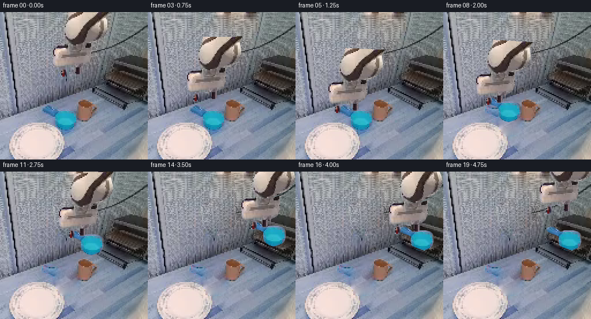
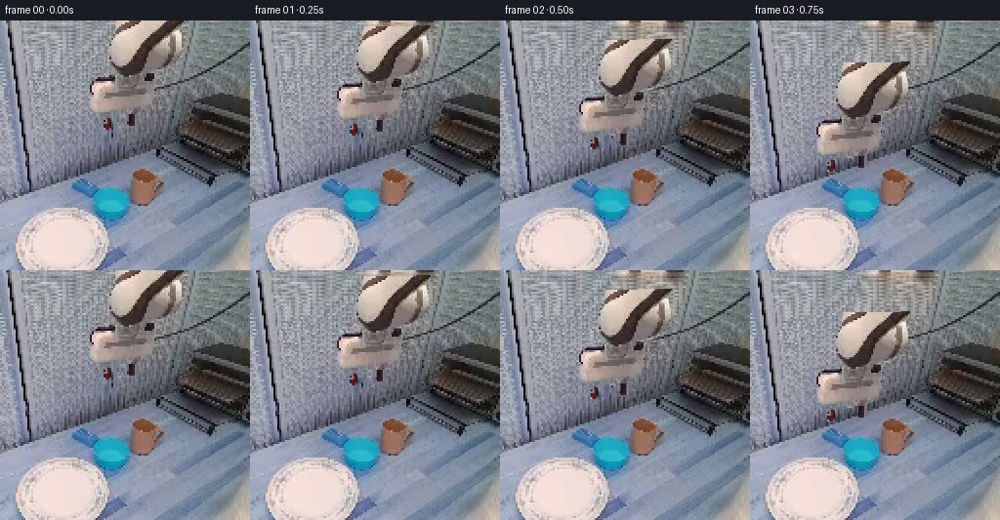
展开代码变化
--- 上一保存版本
+++ 本次保存版本
@@ -0,0 +1,114 @@
+from pathlib import Path
+import math
+import numpy as np
+from PIL import Image, ImageDraw, ImageFilter
+import artifact_io
+
+ROOT = Path(__file__).resolve().parent
+N=256
+base = np.asarray(Image.open(ROOT/'first_frame.png').convert('RGB')).copy()
+
+def poly_mask(points):
+ im=Image.new('L',(N*4,N*4)); d=ImageDraw.Draw(im)
+ d.polygon([(int(x*4),int(y*4)) for x,y in points],fill=255)
+ return im.resize((N,N),Image.Resampling.LANCZOS)
+
+def union(a,b):return Image.fromarray(np.maximum(np.asarray(a),np.asarray(b)))
+
+def poisson_fill(image, mask, texture, steps=1000):
+ m=np.asarray(mask)>30
+ m[[0,-1],:]=False; m[:,[0,-1]]=False
+ src=np.asarray(texture,dtype=np.float32)
+ out=np.asarray(image,dtype=np.float32).copy()
+ out[m]=src[m]
+ lap=4*src[1:-1,1:-1]-src[:-2,1:-1]-src[2:,1:-1]-src[1:-1,:-2]-src[1:-1,2:]
+ inner=m[1:-1,1:-1]
+ for k in range(steps):
+ avg=(out[:-2,1:-1]+out[2:,1:-1]+out[1:-1,:-2]+out[1:-1,2:]+lap)*.25
+ out[1:-1,1:-1][inner]=avg[inner]
+ return np.uint8(np.clip(out,0,255))
+
+arm_outline=[(120,0),(189,0),(184,13),(186,24),(186,31),(183,39),(179,44),(169,51),(159,57),(159,67),(159,80),(154,89),(143,95),(142,106),(136,109),(131,109),(130,99),(122,97),(116,96),(116,109),(112,113),(106,113),(105,105),(108,99),(109,95),(98,96),(94,93),(93,86),(92,77),(92,67),(94,63),(97,59),(116,58),(116,54),(113,50),(110,43),(110,33),(112,24),(114,18),(117,11)]
+arm_mask=poly_mask(arm_outline)
+fore_mask=poly_mask([(120,0),(189,0),(184,13),(186,24),(186,31),(183,39),(179,44),(169,51),(159,54),(146,57),(137,59),(128,58),(121,55),(115,51),(112,47),(110,40),(110,33),(112,24),(114,18),(117,11)])
+left_mask=poly_mask([(109,98),(115,97),(116,106),(114,112),(109,113),(106,112),(106,104)])
+right_mask=poly_mask([(131,96),(141,95),(141,106),(136,109),(131,108)])
+wrist_mask=Image.fromarray(np.uint8(np.clip(np.asarray(arm_mask,dtype=float)-np.asarray(fore_mask,dtype=float)-np.asarray(left_mask,dtype=float)-np.asarray(right_mask,dtype=float),0,255)))
+# Fill the hidden wall with local wall texture and match the existing boundaries.
+yy,xx=np.mgrid[:N,:N]
+walltex=base[yy,30+(xx-92)%57].copy()
+wall_mask=arm_mask.filter(ImageFilter.MaxFilter(5))
+wallbg=poisson_fill(base,wall_mask,walltex,1400)
+# Restore the fixed cable where it had been concealed by the original wrist.
+cable=Image.new('RGB',(N,N)); cd=ImageDraw.Draw(cable)
+cd.line([(153,71),(176,65),(199,55),(222,42),(255,24)],fill=(37,43,39),width=2)
+cabmask=Image.new('L',(N,N)); md=ImageDraw.Draw(cabmask)
+md.line([(153,71),(176,65),(199,55),(222,42),(255,24)],fill=255,width=2)
+cm=(np.asarray(cabmask)>0)&(np.asarray(wall_mask)>30)
+wallbg[cm]=np.asarray(cable)[cm]
+
+cup_outline=[(74,166),(76,164),(81,162),(86,163),(93,167),(98,171),(102,171),(104,169),(121,169),(128,171),(132,174),(134,179),(134,189),(132,195),(129,199),(123,202),(113,205),(106,203),(101,200),(97,196),(95,190),(95,180),(92,178),(87,176),(81,174),(76,171),(74,169)]
+cup_mask=poly_mask(cup_outline)
+# Countertop pixels are recovered only after the vessel leaves its initial pose.
+clear_mask=union(cup_mask,poly_mask([(96,195),(131,194),(137,204),(129,211),(111,215),(103,208)]))
+# Keep the adjacent plate's original edge untouched.
+plate_protect=poly_mask([(0,204),(21,194),(40,190),(63,189),(81,194),(94,200),(105,210),(111,220),(113,241),(105,256),(0,256)])
+clear_mask=Image.fromarray(np.uint8(np.asarray(clear_mask,dtype=float)*(1-np.asarray(plate_protect,dtype=float)/255))).filter(ImageFilter.MaxFilter(3))
+tabletex=base[np.minimum(yy+22,255),np.minimum(xx+57,255)]
+emptybg=poisson_fill(wallbg,clear_mask,tabletex,1200)
+
+def sprite(mask):
+ arr=np.dstack((base,np.asarray(mask)))
+ return Image.fromarray(arr,'RGBA')
+fore=sprite(fore_mask);wrist=sprite(wrist_mask);lf=sprite(left_mask);rf=sprite(right_mask);cup=sprite(cup_mask)
+
+def move(layer, dx,dy,angle=0,pivot=(134,31)):
+ c=math.cos(angle);s=math.sin(angle); px,py=pivot
+ # Rigid rotation and translation; inverse sampling for PIL.
+ tx=px+dx-c*px+s*py;ty=py+dy-s*px-c*py
+ return layer.transform((N,N),Image.Transform.AFFINE,(c,s,-c*tx-s*ty,-s,c,s*tx-c*ty),resample=Image.Resampling.BICUBIC)
+
+S=np.array([300.,-18.]);E0=np.array([230.,-89.]);W0=np.array([134.,31.])
+L1=np.linalg.norm(E0-S);L2=np.linalg.norm(E0-W0)
+initial_angle=math.atan2(*(E0-W0)[::-1])
+def link_angle(dx,dy):
+ W=W0+(dx,dy);v=W-S;dist=np.linalg.norm(v);u=v/dist
+ along=(L1*L1-L2*L2+dist*dist)/(2*dist)
+ height=math.sqrt(max(0,L1*L1-along*along))
+ E=S+along*u+height*np.array([-u[1],u[0]])
+ return math.atan2(*(E-W)[::-1])-initial_angle
+
+# Horizontal wrist attitude is maintained throughout the articulated motion.
+poses=[(0,0,0),(-3,6,1),(-11,20,2.5),(-24,43,3),(-33,58,3),(-35,63,3),(-35,63,0),(-35,63,-3),(-35,49,-3),(-33,32,-3),(-18,16,-3),(10,3,-3),(42,-13,-3),(65,-17,-3),(70,-12,-3),(70,-4,-3),(70,-4,4),(74,-19,4),(76,-33,3),(75,-39,3)]
+# Only the near metal shelf lip is in front of the placed object.
+racklip=poly_mask([(181,121),(190,124),(209,132),(232,140),(255,148),(255,151),(230,143),(208,134),(190,128),(180,124)])
+rackforeground=Image.fromarray(np.dstack((base,np.asarray(racklip))),'RGBA')
+
+def shadow(canvas,cx,cy,opacity,rx=19,ry=5):
+ layer=Image.new('RGBA',(N,N));d=ImageDraw.Draw(layer)
+ d.ellipse((cx-rx,cy-ry,cx+rx,cy+ry),fill=(35,51,65,int(opacity)))
+ canvas.alpha_composite(layer.filter(ImageFilter.GaussianBlur(2)))
+
+frames=[base.copy()]
+for i,(dx,dy,opening) in enumerate(poses[1:],1):
+ canvas=Image.fromarray(wallbg if i<8 else emptybg).convert('RGBA')
+ if i>=8:
+ cdx,cdy=(dx+35,dy-63) if i<=15 else (105,-67)
+ if i<11:
+ shadow(canvas,114+cdx*.12,208, max(0,27+i*-2),17,4)
+ if i>=14:
+ shadow(canvas,219,136,32 if i>=15 else 17,17,3)
+ canvas.alpha_composite(move(cup,cdx,cdy))
+ if i>=12:
+ canvas.alpha_composite(rackforeground)
+ # Counter-rotated wrist and opposing rigid fingertips.
+ canvas.alpha_composite(move(wrist,dx,dy))
+ canvas.alpha_composite(move(fore,dx,dy,link_angle(dx,dy)))
+ canvas.alpha_composite(move(lf,dx-opening,dy))
+ canvas.alpha_composite(move(rf,dx+opening,dy))
+ frames.append(np.asarray(canvas.convert('RGB')))
+frames=np.asarray(frames,dtype=np.uint8)
+assert np.array_equal(frames[0],base)
+artifact_io.save(frames,ROOT)
+Image.fromarray(wallbg).save(ROOT/'.tmp/wallbg.png')
+Image.fromarray(emptybg).save(ROOT/'.tmp/emptybg.png')
候选 02播放与检查图
点击播放 · 原生 RGB 像素

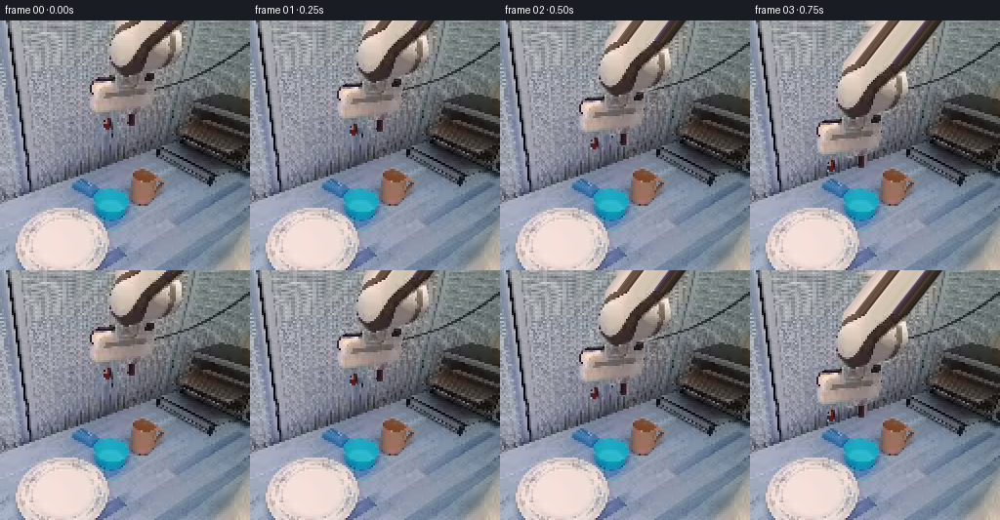
展开代码变化
--- 上一保存版本
+++ 本次保存版本
@@ -50,11 +50,11 @@
cup_outline=[(74,166),(76,164),(81,162),(86,163),(93,167),(98,171),(102,171),(104,169),(121,169),(128,171),(132,174),(134,179),(134,189),(132,195),(129,199),(123,202),(113,205),(106,203),(101,200),(97,196),(95,190),(95,180),(92,178),(87,176),(81,174),(76,171),(74,169)]
cup_mask=poly_mask(cup_outline)
# Countertop pixels are recovered only after the vessel leaves its initial pose.
-clear_mask=union(cup_mask,poly_mask([(96,195),(131,194),(137,204),(129,211),(111,215),(103,208)]))
+clear_mask=union(cup_mask,poly_mask([(73,163),(80,159),(89,162),(101,168),(115,167),(132,170),(138,181),(137,201),(128,210),(113,215),(103,211),(96,201),(91,185),(89,178),(79,176),(72,172)]))
# Keep the adjacent plate's original edge untouched.
plate_protect=poly_mask([(0,204),(21,194),(40,190),(63,189),(81,194),(94,200),(105,210),(111,220),(113,241),(105,256),(0,256)])
clear_mask=Image.fromarray(np.uint8(np.asarray(clear_mask,dtype=float)*(1-np.asarray(plate_protect,dtype=float)/255))).filter(ImageFilter.MaxFilter(3))
-tabletex=base[np.minimum(yy+22,255),np.minimum(xx+57,255)]
+tabletex=base[yy,np.minimum(xx+100,255)]
emptybg=poisson_fill(wallbg,clear_mask,tabletex,1200)
def sprite(mask):
@@ -62,11 +62,32 @@
return Image.fromarray(arr,'RGBA')
fore=sprite(fore_mask);wrist=sprite(wrist_mask);lf=sprite(left_mask);rf=sprite(right_mask);cup=sprite(cup_mask)
+# The first view clips the long rigid link at the image border. Continue its
+# original parallel surfaces to the (offscreen) elbow, using only its top-row
+# pixels. This is a rigid texture extension, not a stretching of the link.
+extended=np.zeros((448,384,4),dtype=np.uint8)
+extended[192:448,:256]=np.asarray(fore)
+for j in range(82,192):
+ world_y=j-192
+ sx=np.arange(384)+world_y*.8
+ source_x=np.clip(sx,0,255)
+ for channel in range(4):
+ extended[j,:,channel]=np.interp(source_x,np.arange(256),np.asarray(fore)[0,:,channel])
+ extended[j,(sx<0)|(sx>255),3]=0
+fore_extended=Image.fromarray(extended)
+
def move(layer, dx,dy,angle=0,pivot=(134,31)):
c=math.cos(angle);s=math.sin(angle); px,py=pivot
# Rigid rotation and translation; inverse sampling for PIL.
tx=px+dx-c*px+s*py;ty=py+dy-s*px-c*py
return layer.transform((N,N),Image.Transform.AFFINE,(c,s,-c*tx-s*ty,-s,c,s*tx-c*ty),resample=Image.Resampling.BICUBIC)
+
+def move_fore(dx,dy,angle):
+ c=math.cos(angle);s=math.sin(angle);px,py=134,31
+ tx=px+dx-c*px+s*py;ty=py+dy-s*px-c*py
+ return fore_extended.transform((N,N),Image.Transform.AFFINE,
+ (c,s,-c*tx-s*ty,-s,c,s*tx-c*ty+192),
+ resample=Image.Resampling.BICUBIC)
S=np.array([300.,-18.]);E0=np.array([230.,-89.]);W0=np.array([134.,31.])
L1=np.linalg.norm(E0-S);L2=np.linalg.norm(E0-W0)
@@ -103,7 +124,7 @@
canvas.alpha_composite(rackforeground)
# Counter-rotated wrist and opposing rigid fingertips.
canvas.alpha_composite(move(wrist,dx,dy))
- canvas.alpha_composite(move(fore,dx,dy,link_angle(dx,dy)))
+ canvas.alpha_composite(move_fore(dx,dy,link_angle(dx,dy)))
canvas.alpha_composite(move(lf,dx-opening,dy))
canvas.alpha_composite(move(rf,dx+opening,dy))
frames.append(np.asarray(canvas.convert('RGB')))
候选 03播放与检查图
点击播放 · 原生 RGB 像素
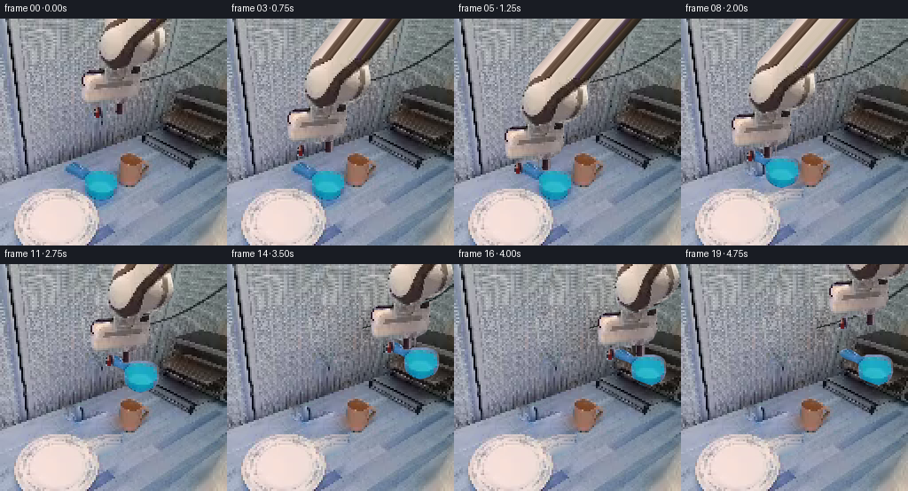
展开代码变化
--- 上一保存版本
+++ 本次保存版本
@@ -17,10 +17,10 @@
def poisson_fill(image, mask, texture, steps=1000):
m=np.asarray(mask)>30
- m[[0,-1],:]=False; m[:,[0,-1]]=False
src=np.asarray(texture,dtype=np.float32)
out=np.asarray(image,dtype=np.float32).copy()
out[m]=src[m]
+ m[[0,-1],:]=False; m[:,[0,-1]]=False
lap=4*src[1:-1,1:-1]-src[:-2,1:-1]-src[2:,1:-1]-src[1:-1,:-2]-src[1:-1,2:]
inner=m[1:-1,1:-1]
for k in range(steps):
@@ -54,7 +54,7 @@
# Keep the adjacent plate's original edge untouched.
plate_protect=poly_mask([(0,204),(21,194),(40,190),(63,189),(81,194),(94,200),(105,210),(111,220),(113,241),(105,256),(0,256)])
clear_mask=Image.fromarray(np.uint8(np.asarray(clear_mask,dtype=float)*(1-np.asarray(plate_protect,dtype=float)/255))).filter(ImageFilter.MaxFilter(3))
-tabletex=base[yy,np.minimum(xx+100,255)]
+tabletex=base[yy,np.maximum(xx-62,0)]
emptybg=poisson_fill(wallbg,clear_mask,tabletex,1200)
def sprite(mask):
@@ -115,6 +115,7 @@
canvas=Image.fromarray(wallbg if i<8 else emptybg).convert('RGBA')
if i>=8:
cdx,cdy=(dx+35,dy-63) if i<=15 else (105,-67)
+ # Shelf backboard occludes part of the handle as it enters the rack.
if i<11:
shadow(canvas,114+cdx*.12,208, max(0,27+i*-2),17,4)
if i>=14:
候选 04播放与检查图
点击播放 · 原生 RGB 像素

展开代码变化
--- 上一保存版本
+++ 本次保存版本
@@ -54,7 +54,10 @@
# Keep the adjacent plate's original edge untouched.
plate_protect=poly_mask([(0,204),(21,194),(40,190),(63,189),(81,194),(94,200),(105,210),(111,220),(113,241),(105,256),(0,256)])
clear_mask=Image.fromarray(np.uint8(np.asarray(clear_mask,dtype=float)*(1-np.asarray(plate_protect,dtype=float)/255))).filter(ImageFilter.MaxFilter(3))
-tabletex=base[yy,np.maximum(xx-62,0)]
+tabletex=base[177+(yy-165)%24,165+(xx-73)%23].astype(float)
+# A low-amplitude tile of unobstructed local metal grain supplies texture,
+# while the harmonic fill derives illumination from the surrounding counter.
+tabletex=tabletex.mean(axis=(0,1))+(tabletex-tabletex.mean(axis=(0,1)))*.42
emptybg=poisson_fill(wallbg,clear_mask,tabletex,1200)
def sprite(mask):
@@ -115,7 +118,6 @@
canvas=Image.fromarray(wallbg if i<8 else emptybg).convert('RGBA')
if i>=8:
cdx,cdy=(dx+35,dy-63) if i<=15 else (105,-67)
- # Shelf backboard occludes part of the handle as it enters the rack.
if i<11:
shadow(canvas,114+cdx*.12,208, max(0,27+i*-2),17,4)
if i>=14:
候选 05播放与检查图
可观测工具轨迹
实际执行的命令与返回图片。
命令 1exit 0
/bin/bash -lc "ls -la && cat prompt.txt && printf '\\n---RULES---\\n' && cat GENERATION_RULES.md"
命令 2exit 0
/bin/bash -lc "cat task_spec.json && sed -n '1,260p' artifact_io.py && python - <<'PY'
from PIL import Image
im=Image.open('first_frame.png');print(im.size);im.resize((768,768)).save('.tmp/first_large.png')
PY"命令 3exit 0
/bin/bash -lc "python - <<'PY' import numpy as np S=np.array([217.,-64]); W=np.array([132.,40.]);L1=104;L2=102 d=np.linalg.norm(W-S); u=(W-S)/d;p=(L1*L1-L2*L2+d*d)/(2*d);h=np.sqrt(L1*L1-p*p) for sign in [-1,1]:print(S+p*u+sign*h*np.array([-u[1],u[0]])) PY"
命令 4exit 0
/bin/bash -lc "python - <<'PY'
from PIL import Image,ImageDraw
im=Image.open('first_frame.png').resize((1024,1024));d=ImageDraw.Draw(im)
for x in range(0,256,16):
d.line((x*4,0,x*4,1023), fill=(255,0,0),width=1);d.text((x*4+1,2),str(x),fill='yellow')
for y in range(0,256,16):
d.line((0,y*4,1023,y*4), fill=(255,0,0),width=1);d.text((2,y*4+1),str(y),fill='yellow')
im.save('.tmp/grid.png')
PY"命令 5exit 0
/bin/bash -lc "python - <<'PY'
import numpy as np
S=np.array([308.,-14.]);E0=np.array([232.,-66.]);W0=np.array([136.,50.]);l1=np.linalg.norm(E0-S);l2=np.linalg.norm(E0-W0)
for W in [W0,np.array([125.,122.]),np.array([217.,81.]),np.array([217.,70.]),np.array([165.,15.])]:
d=np.linalg.norm(W-S);u=(W-S)/d;a=(l1*l1-l2*l2+d*d)/(2*d);h=np.sqrt(max(0,l1*l1-a*a));E=S+a*u+h*np.array([-u[1],u[0]]);print('W',W,'E',E,'angle',np.arctan2(*(E-W)[::-1])*180/np.pi)
PY"命令 6exit 0
/bin/bash -lc "python - <<'PY'
from PIL import Image
im=Image.open('first_frame.png'); im.crop((65,150,141,215)).resize((608,520)).save('.tmp/cup.png');im.crop((88,0,190,117)).resize((612,702)).save('.tmp/arm.png');im.crop((171,72,256,161)).resize((510,534)).save('.tmp/rack.png')
PY"命令 7exit 0
/bin/bash -lc "python - <<'PY' import numpy as np S=np.array([300.,-18]);E0=np.array([230.,-89]);W0=np.array([134.,31]);l1=np.linalg.norm(E0-S);l2=np.linalg.norm(E0-W0) for D in [(0,0),(-7,76),(22,20),(97,8),(54,-47)]: W=W0+D;v=W-S;d=np.linalg.norm(v);u=v/d;a=(l1*l1-l2*l2+d*d)/(2*d);h=np.sqrt(max(0,l1*l1-a*a));E=S+a*u+h*np.array([-u[1],u[0]]);print(W,E,'angle',np.arctan2(*(E-W)[::-1])*180/np.pi) PY"
命令 8exit 0
/bin/bash -lc "cat > generate.py <<'PY'
from pathlib import Path
import math
import numpy as np
from PIL import Image, ImageDraw, ImageFilter
import artifact_io
ROOT = Path(__file__).resolve().parent
N=256
base = np.asarray(Image.open(ROOT/'first_frame.png').convert('RGB')).copy()
def poly_mask(points):
im=Image.new('L',(N*4,N*4)); d=ImageDraw.Draw(im)
d.polygon([(int(x*4),int(y*4)) for x,y in points],fill=255)
return im.resize((N,N),Image.Resampling.LANCZOS)
def union(a,b):return Image.fromarray(np.maximum(np.asarray(a),np.asarray(b)))
def poisson_fill(image, mask, texture, steps=1000):
m=np.asarray(mask)>30
m[[0,-1],:]=False; m[:,[0,-1]]=False
src=np.asarray(texture,dtype=np.float32)
out=np.asarray(image,dtype=np.float32).copy()
out[m]=src[m]
lap=4*src[1:-1,1:-1]-src[:-2,1:-1]-src[2:,1:-1]-src[1:-1,:-2]-src[1:-1,2:]
inner=m[1:-1,1:-1]
for k in range(steps):
avg=(out[:-2,1:-1]+out[2:,1:-1]+out[1:-1,:-2]+out[1:-1,2:]+lap)*.25
out[1:-1,1:-1][inner]=avg[inner]
return np.uint8(np.clip(out,0,255))
arm_outline=[(120,0),(189,0),(184,13),(186,24),(186,31),(183,39),(179,44),(169,51),(159,57),(159,67),(159,80),(154,89),(143,95),(142,106),(136,109),(131,109),(130,99),(122,97),(116,96),(116,109),(112,113),(106,113),(105,105),(108,99),(109,95),(98,96),(94,93),(93,86),(92,77),(92,67),(94,63),(97,59),(116,58),(116,54),(113,50),(110,43),(110,33),(112,24),(114,18),(117,11)]
arm_mask=poly_mask(arm_outline)
fore_mask=poly_mask([(120,0),(189,0),(184,13),(186,24),(186,31),(183,39),(179,44),(169,51),(159,54),(146,57),(137,59),(128,58),(121,55),(115,51),(112,47),(110,40),(110,33),(112,24),(114,18),(117,11)])
left_mask=poly_mask([(109,98),(115,97),(116,106),(114,112),(109,113),(106,112),(106,104)])
right_mask=poly_mask([(131,96),(141,95),(141,106),(136,109),(131,108)])
wrist_mask=Image.fromarray(np.uint8(np.clip(np.asarray(arm_mask,dtype=float)-np.asarray(fore_mask,dtype=float)-np.asarray(left_mask,dtype=float)-np.asarray(right_mask,dtype=float),0,255)))
# Fill the hidden wall with local wall texture and match the existing boundaries.
yy,xx=np.mgrid[:N,:N]
walltex=base[yy,30+(xx-92)%57].copy()
wall_mask=arm_mask.filter(ImageFilter.MaxFilter(5))
wallbg=poisson_fill(base,wall_mask,walltex,1400)
# Restore the fixed cable where it had been concealed by the original wrist.
cable=Image.new('RGB',(N,N)); cd=ImageDraw.Draw(cable)
cd.line([(153,71),(176,65),(199,55),(222,42),(255,24)],fill=(37,43,39),width=2)
cabmask=Image.new('L',(N,N)); md=ImageDraw.Draw(cabmask)
md.line([(153,71),(176,65),(199,55),(222,42),(255,24)],fill=255,width=2)
cm=(np.asarray(cabmask)>0)&(np.asarray(wall_mask)>30)
wallbg[cm]=np.asarray(cable)[cm]
cup_outline=[(74,166),(76,164),(81,162),(86,163),(93,167),(98,171),(102,171),(104,169),(121,169),(128,171),(132,174),(134,179),(134,189),(132,195),(129,199),(123,202),(113,205),(106,203),(101,200),(97,196),(95,190),(95,180),(92,178),(87,176),(81,174),(76,171),(74,169)]
cup_mask=poly_mask(cup_outline)
# Countertop pixels are recovered only after the vessel leaves its initial pose.
clear_mask=union(cup_mask,poly_mask([(96,195),(131,194),(137,204),(129,211),(111,215),(103,208)]))
# Keep the adjacent plate's original edge untouched.
plate_protect=poly_mask([(0,204),(21,194),(40,190),(63,189),(81,194),(94,200),(105,210),(111,220),(113,241),(105,256),(0,256)])
clear_mask=Image.fromarray(np.uint8(np.asarray(clear_mask,dtype=float)*(1-np.asarray(plate_protect,dtype=float)/255))).filter(ImageFilter.MaxFilter(3))
tabletex=base[np.minimum(yy+22,255),np.minimum(xx+57,255)]
emptybg=poisson_fill(wallbg,clear_mask,tabletex,1200)
def sprite(mask):
arr=np.dstack((base,np.asarray(mask)))
return Image.fromarray(arr,'RGBA')
fore=sprite(fore_mask);wrist=sprite(wrist_mask);lf=sprite(left_mask);rf=sprite(right_mask);cup=sprite(cup_mask)
def move(layer, dx,dy,angle=0,pivot=(134,31)):
c=math.cos(angle);s=math.sin(angle); px,py=pivot
# Rigid rotation and translation; inverse sampling for PIL.
tx=px+dx-c*px+s*py;ty=py+dy-s*px-c*py
return layer.transform((N,N),Image.Transform.AFFINE,(c,s,-c*tx-s*ty,-s,c,s*tx-c*ty),resample=Image.Resampling.BICUBIC)
S=np.array([300.,-18.]);E0=np.array([230.,-89.]);W0=np.array([134.,31.])
L1=np.linalg.norm(E0-S);L2=np.linalg.norm(E0-W0)
initial_angle=math.atan2(*(E0-W0)[::-1])
def link_angle(dx,dy):
W=W0+(dx,dy);v=W-S;dist=np.linalg.norm(v);u=v/dist
along=(L1*L1-L2*L2+dist*dist)/(2*dist)
height=math.sqrt(max(0,L1*L1-along*along))
E=S+along*u+height*np.array([-u[1],u[0]])
return math.atan2(*(E-W)[::-1])-initial_angle
# Horizontal wrist attitude is maintained throughout the articulated motion.
poses=[(0,0,0),(-3,6,1),(-11,20,2.5),(-24,43,3),(-33,58,3),(-35,63,3),(-35,63,0),(-35,63,-3),(-35,49,-3),(-33,32,-3),(-18,16,-3),(10,3,-3),(42,-13,-3),(65,-17,-3),(70,-12,-3),(70,-4,-3),(70,-4,4),(74,-19,4),(76,-33,3),(75,-39,3)]
# Only the near metal shelf lip is in front of the placed object.
racklip=poly_mask([(181,121),(190,124),(209,132),(232,140),(255,148),(255,151),(230,143),(208,134),(190,128),(180,124)])
rackforeground=Image.fromarray(np.dstack((base,np.asarray(racklip))),'RGBA')
def shadow(canvas,cx,cy,opacity,rx=19,ry=5):
layer=Image.new('RGBA',(N,N));d=ImageDraw.Draw(layer)
d.ellipse((cx-rx,cy-ry,cx+rx,cy+ry),fill=(35,51,65,int(opacity)))
canvas.alpha_composite(layer.filter(ImageFilter.GaussianBlur(2)))
frames=[base.copy()]
for i,(dx,dy,opening) in enumerate(poses[1:],1):
canvas=Image.fromarray(wallbg if i<8 else emptybg).convert('RGBA')
if i>=8:
cdx,cdy=(dx+35,dy-63) if i<=15 else (105,-67)
if i<11:
shadow(canvas,114+cdx*.12,208, max(0,27+i*-2),17,4)
if i>=14:
shadow(canvas,219,136,32 if i>=15 else 17,17,3)
canvas.alpha_composite(move(cup,cdx,cdy))
if i>=12:
canvas.alpha_composite(rackforeground)
# Counter-rotated wrist and opposing rigid fingertips.
canvas.alpha_composite(move(wrist,dx,dy))
canvas.alpha_composite(move(fore,dx,dy,link_angle(dx,dy)))
canvas.alpha_composite(move(lf,dx-opening,dy))
canvas.alpha_composite(move(rf,dx+opening,dy))
frames.append(np.asarray(canvas.convert('RGB')))
frames=np.asarray(frames,dtype=np.uint8)
assert np.array_equal(frames[0],base)
artifact_io.save(frames,ROOT)
Image.fromarray(wallbg).save(ROOT/'.tmp/wallbg.png')
Image.fromarray(emptybg).save(ROOT/'.tmp/emptybg.png')
PY
python generate.py"命令 9exit 0
/bin/bash -lc 'python generate.py'
命令 10exit 0
/bin/bash -lc "python - <<'PY'
from PIL import Image
Image.open('.tmp/emptybg.png').resize((768,768)).save('.tmp/background_large.png')
Image.open('frames/07.png').resize((768,768)).save('.tmp/grasp_large.png')
Image.open('frames/19.png').resize((768,768)).save('.tmp/final_large.png')
PY"命令 11exit 0
/bin/bash -lc "python - <<'PY'
from PIL import Image
im=Image.open('first_frame.png')
im.crop((100,0,200,64)).resize((800,512)).save('.tmp/top.png')
# print contiguous regions on top row for brightness or brown material
import numpy as np
x=np.array(im)[0]
for p in range(105,196):
print(p,tuple(x[p]),end='; ')
print()
PY"命令 12exit 0
/bin/bash -lc "python generate.py && python - <<'PY'
from PIL import Image
Image.open('.tmp/emptybg.png').resize((768,768)).save('.tmp/background_large.png')
PY"命令 13exit 0
/bin/bash -lc "python - <<'PY'
from PIL import Image
im=Image.open('first_frame.png')
im.crop((165,177,188,201)).resize((460,480)).save('.tmp/tablepatch.png')
PY"命令 14exit 0
/bin/bash -lc "python generate.py && python - <<'PY'
from PIL import Image
Image.open('.tmp/emptybg.png').resize((768,768)).save('.tmp/background_large.png')
PY"命令 15exit 0
/bin/bash -lc "command -v ffmpeg || true; python - <<'PY'
import numpy as np
from PIL import Image
from pathlib import Path
p=np.load('pixels.npz')['pixels']
f=np.array(Image.open('first_frame.png').convert('RGB'))
packed=(f[:,:,0].astype('uint32')<<16)|(f[:,:,1].astype('uint32')<<8)|f[:,:,2].astype('uint32')
assert p.shape==(256,256,20)
assert np.array_equal(p[:,:,0],packed)
assert len(list(Path('frames').glob('*.png')))==20
print('Verified 20 RGB frames at 256x256; initial frame is pixel-identical.')
PY"视觉工具实际返回图片 1
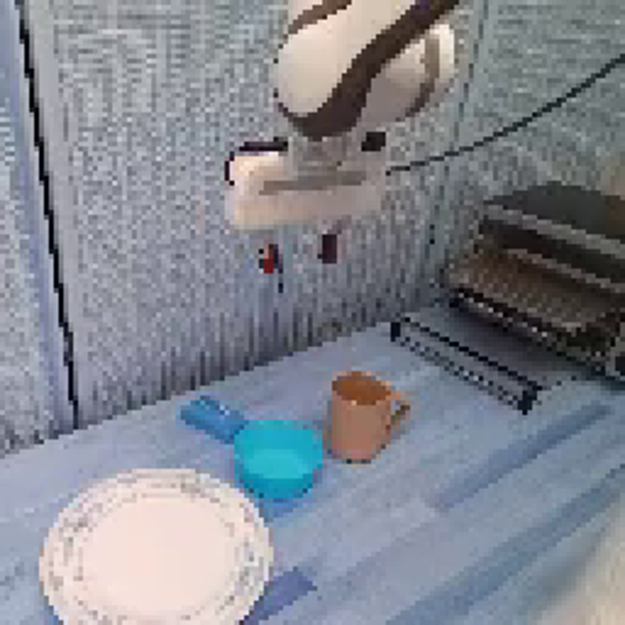
视觉工具实际返回图片 2
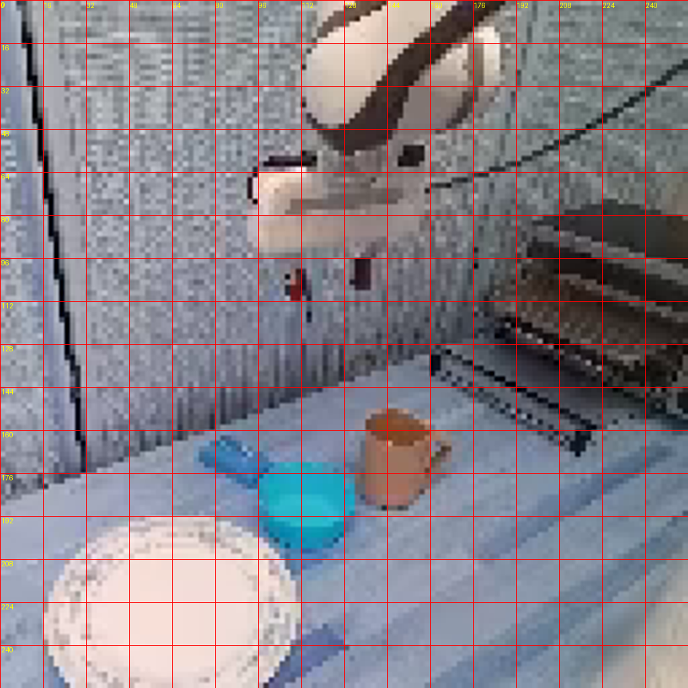
视觉工具实际返回图片 3
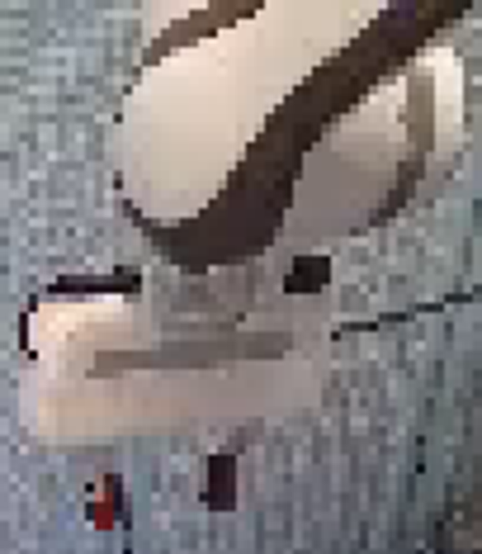
视觉工具实际返回图片 4
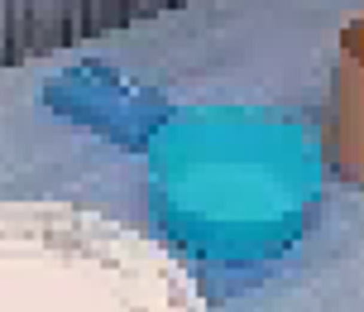
视觉工具实际返回图片 5
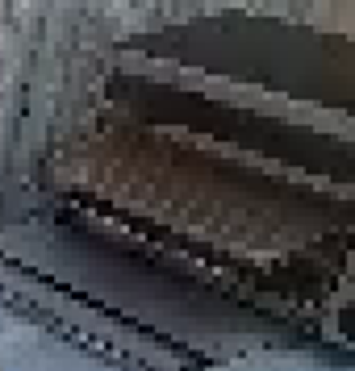
视觉工具实际返回图片 6

视觉工具实际返回图片 7
视觉工具实际返回图片 8
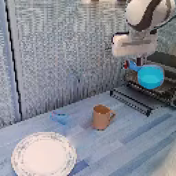
视觉工具实际返回图片 9
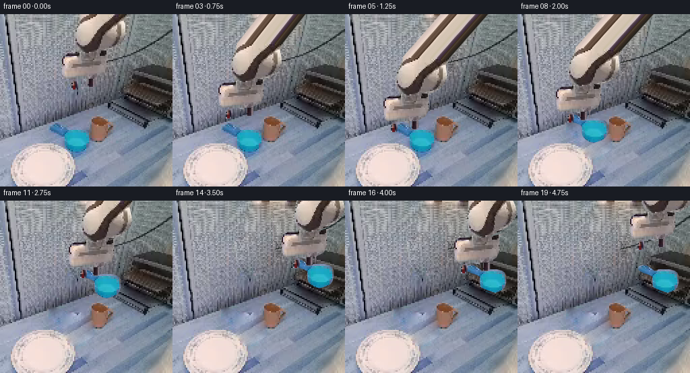
视觉工具实际返回图片 10
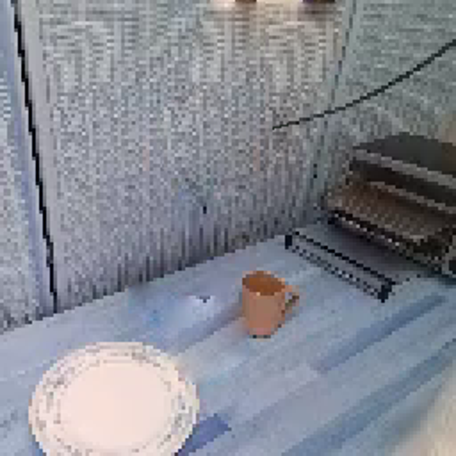
视觉工具实际返回图片 11
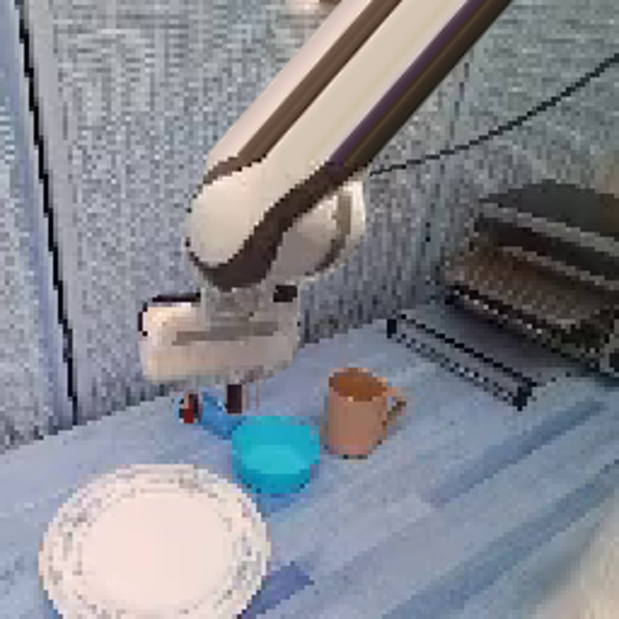
视觉工具实际返回图片 12
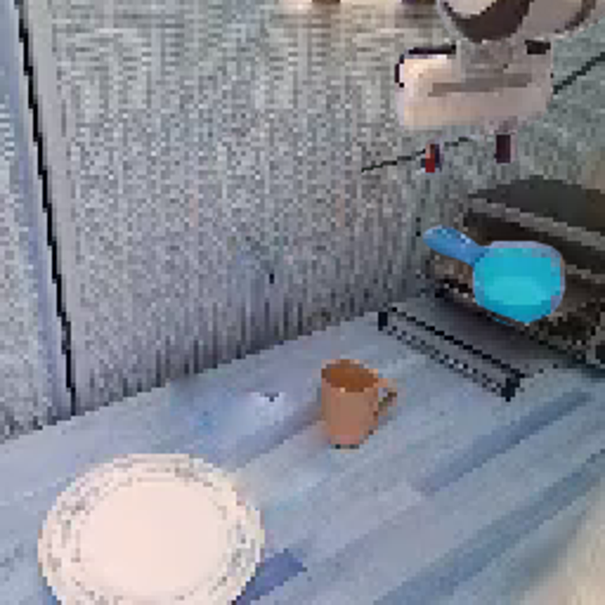
视觉工具实际返回图片 13
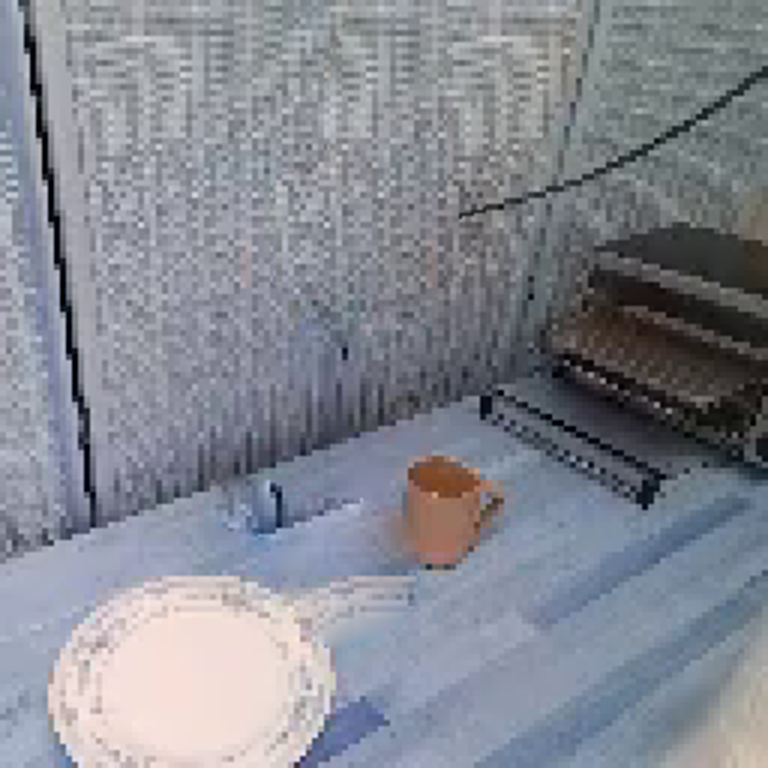
视觉工具实际返回图片 14
视觉工具实际返回图片 15
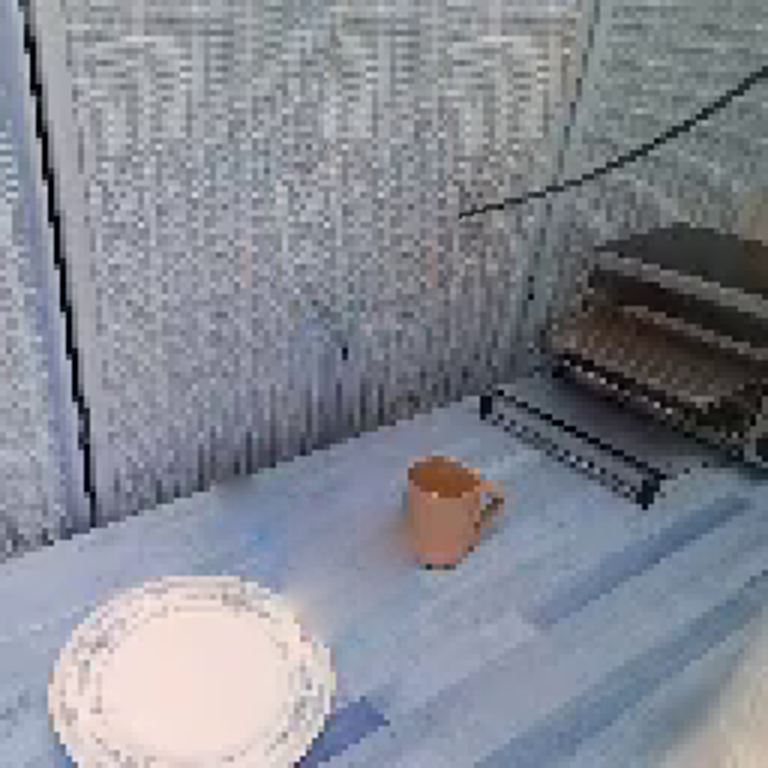
视觉工具实际返回图片 16
保存候选 5 份；完成命令 15 次；可验证图片返回 16 张。原始 API 响应与完整日志保留在本地。